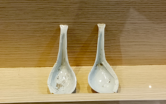
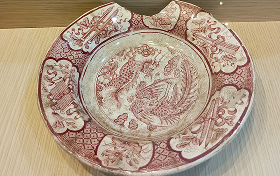
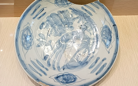
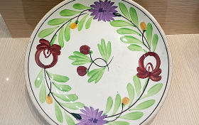

PEDANG & WARANGKA I

Artefak perang dan warangka I bagian dari perlengkapan senjata tradisional yang digunakan pada masa lalu. Warangka berfungsi sebagai sarung senjata, sementara senjata perang digunakan untuk pertahanan dan konflik. Artefak ini mencerminkan teknologi persenjataan serta nilai budaya dan status sosial masyarakat pada masanya.
KERIS & WARANGKA VIII

Satu set keris lengkap dengan warangka (sarung) yang mencerminkan keahlian tempa logam dan seni ukir. Artefak ini berfungsi sebagai senjata, simbol status, serta benda pusaka.
KERIS & WARANGKA V
.png)
Variasi keris dengan bentuk bilah dan hiasan warangka yang berbeda, menunjukkan perkembangan gaya dan fungsi keris dalam budaya Nusantara.
KERIS & WARANGKA IV
.png)
Keris ini mencerminkan nilai estetika dan spiritual, digunakan dalam upacara adat serta sebagai identitas sosial pemiliknya.
KERIS & WARANGKA VI
.png)
Artefak ini menunjukkan keberagaman desain keris dan warangka, sekaligus mencerminkan tradisi persenjataan dan simbol budaya masyarakat masa lalu.
BADAN BILAH KERIS III
.png)
Badan Bilah Keris III merupakan salah satu tipe bilah keris yang mencerminkan keragaman bentuk, fungsi, dan nilai budaya keris pada masa lalu.
KERIS & WARANGKA I
.png)
Keris dan warangka merupakan senjata tradisional Nusantara, di mana keris berfungsi sebagai senjata sekaligus simbol status dan spiritual, sedangkan warangka adalah sarung pelindung bilah. Artefak ini mencerminkan keterampilan tempa logam, seni ukir, dan nilai budaya masyarakat masa lalu.
KUDI

Artefak kudi merupakan senjata tradisional sekaligus alat pertanian yang telah digunakan sejak masa lalu di Nusantara. Kudi mencerminkan keterampilan tempa logam serta fungsi ganda sebagai alat kerja dan simbol budaya masyarakat pada masanya.
BADAN BILAH KERIS II
.png)
Badan bilah keris II adalah bagian utama keris yang menunjukkan teknik penempaan logam dan bentuk khas keris. Artefak ini mencerminkan fungsi keris sebagai senjata serta makna simbolik dalam tradisi budaya Nusantara.
BADAN BILAH KERIS I

Artefak badan bilah keris I merupakan bagian utama dari senjata tradisional keris yang dibuat sejak masa sejarah Nusantara. Bilah keris mencerminkan keahlian tempa logam, fungsi pertahanan, serta nilai simbolik dan budaya masyarakat pada masanya.
BADAN BILAH KERIS V
.png)
Badan Bilah Keris V Bagian bilah keris yang digunakan sebagai senjata tikam dan memiliki nilai simbolik dalam budaya Nusantara.
BADAN BILAH KERIS III
.png)
Badan Bilah Keris III merupakan salah satu tipe bilah keris yang mencerminkan keragaman bentuk, fungsi, dan nilai budaya keris pada masa lalu.
BADAN BILAH KERIS VII
.png)
Badan Bilah Keris VII Variasi bilah keris dengan karakter bentuk tertentu yang menunjukkan perkembangan teknik pembuatan senjata tradisional.
BADAN BILAH KERIS IV
.png)
Badan Bilah Keris IV merupakan bagian utama dari keris yang dibuat dengan teknik tempa logam tradisional. Artefak ini mencerminkan fungsi keris sebagai senjata sekaligus simbol budaya, status, dan nilai spiritual masyarakat Nusantara pada masa lalu.
SENJATA

Artefak senjata merupakan alat yang digunakan sejak masa lalu untuk berburu, pertahanan diri, dan peperangan. Terbuat dari batu, logam, atau kayu, senjata mencerminkan perkembangan teknologi, kekuatan militer, serta kondisi sosial budaya masyarakat pada masanya.
MATA TOMBAK

Artefak mata tombak merupakan ujung senjata tradisional yang digunakan sejak masa lalu untuk berburu dan peperangan. Terbuat dari batu atau logam, mata tombak mencerminkan perkembangan teknologi persenjataan serta cara hidup masyarakat masa lalu.
BADAN BILAH KERIS VI
.png)
Badan bilah keris VI merupakan bagian bilah keris yang mencerminkan keahlian tempa logam serta fungsi keris sebagai senjata dan simbol status sosial.
GUCI CINA I
.png)
Artefak guci Cina merupakan wadah keramik yang berkembang sejak masa dinasti-dinasti Cina dan masuk ke Nusantara melalui jalur perdagangan. Guci ini digunakan untuk menyimpan barang serta memiliki nilai simbolik, mencerminkan kemajuan teknologi keramik dan hubungan dagang masa lalu.
GUCI CINA II
.png)
Artefak guci Cina merupakan wadah keramik yang berkembang sejak masa dinasti-dinasti Cina dan masuk ke Nusantara melalui jalur perdagangan. Guci ini digunakan untuk menyimpan barang serta memiliki nilai simbolik, mencerminkan kemajuan teknologi keramik dan hubungan dagang masa lalu.
GUCI CINA III
.png)
Artefak guci Cina merupakan wadah keramik yang berkembang sejak masa dinasti-dinasti Cina dan masuk ke Nusantara melalui jalur perdagangan. Guci ini digunakan untuk menyimpan barang serta memiliki nilai simbolik, mencerminkan kemajuan teknologi keramik dan hubungan dagang masa lalu.
GUCI CINA IV
.png)
Artefak guci Cina merupakan wadah keramik yang berkembang sejak masa dinasti-dinasti Cina dan masuk ke Nusantara melalui jalur perdagangan. Guci ini digunakan untuk menyimpan barang serta memiliki nilai simbolik, mencerminkan kemajuan teknologi keramik dan hubungan dagang masa lalu.
GUCI AKHIR DINASTI QING
.png)
Artefak guci akhir Dinasti Qing merupakan keramik Cina yang dibuat pada masa akhir Dinasti Qing (abad ke-19–awal abad ke-20) dan masuk ke Nusantara melalui perdagangan. Guci ini mencerminkan perkembangan akhir seni keramik Cina serta hubungan dagang dan budaya pada masa tersebut.
SENDOK I

Artefak sendok telah digunakan sejak masa lalu sebagai alat makan dan pengambil bahan makanan. Terbuat dari bahan seperti kayu, tulang, logam, atau keramik, sendok mencerminkan perkembangan kebiasaan makan dan teknologi masyarakat pada masanya.
SENDOK II
.png)
Artefak sendok telah digunakan sejak masa lalu sebagai alat makan dan pengambil bahan makanan. Terbuat dari bahan seperti kayu, tulang, logam, atau keramik, sendok mencerminkan perkembangan kebiasaan makan dan teknologi masyarakat pada masanya.
PIRING BELANDA I

Artefak piring Belanda merupakan keramik yang masuk ke Nusantara pada masa kolonial Belanda melalui jalur perdagangan dan administrasi kolonial. Piring ini mencerminkan pengaruh budaya Eropa, perkembangan industri keramik Belanda, serta hubungan ekonomi dan sosial pada masa tersebut.
PIRING BELANDA II
.png)
Artefak piring Belanda merupakan keramik yang masuk ke Nusantara pada masa kolonial Belanda melalui jalur perdagangan dan administrasi kolonial. Piring ini mencerminkan pengaruh budaya Eropa, perkembangan industri keramik Belanda, serta hubungan ekonomi dan sosial pada masa tersebut.
PIRING DINASTI

Artefak piring dinasti merupakan keramik yang berasal dari masa dinasti-dinasti besar, terutama Cina, dan masuk ke Nusantara melalui jalur perdagangan. Piring ini mencerminkan perkembangan seni keramik, teknologi pembakaran, serta hubungan dagang dan budaya masyarakat masa lalu.
PIRING EROPA I

Artefak piring Eropa merupakan keramik yang masuk ke Nusantara sejak masa kolonial melalui perdagangan dan pengaruh budaya Barat. Piring ini mencerminkan perkembangan teknologi keramik Eropa serta interaksi budaya dan ekonomi masyarakat masa lalu.
KENDI I

Kendi I merupakan wadah air dari keramik yang digunakan sejak masa lalu untuk menyimpan dan menuang air dalam kebutuhan sehari-hari maupun upacara adat. Artefak ini mencerminkan kebiasaan hidup dan teknologi keramik masyarakat.
KENDI II

Kendi II adalah variasi kendi dengan bentuk atau hiasan berbeda yang berfungsi sebagai wadah cairan. Artefak ini menunjukkan perkembangan desain dan fungsi kendi dalam budaya masa lalu.
10 GULDEN 1942

Uang 10 Gulden 1942 merupakan uang kertas masa Perang Dunia II yang digunakan di Hindia Belanda saat awal pendudukan Jepang. Artefak ini mencerminkan kondisi ekonomi dan perubahan kekuasaan pada masa itu.
10 RUPIAH 1944
.png)
Uang 10 Rupiah 1944 diterbitkan pada masa pendudukan Jepang sebagai alat pembayaran resmi di Indonesia. Mata uang ini menggantikan gulden Belanda dan mencerminkan kondisi ekonomi serta perubahan kekuasaan pada masa Perang Dunia II.
1 RUPIAH 1945
.png)
Uang 1 Rupiah 1945 merupakan salah satu mata uang awal yang digunakan setelah Indonesia memproklamasikan kemerdekaan. Uang ini diterbitkan sebagai simbol kedaulatan negara dan digunakan untuk mendukung aktivitas ekonomi masyarakat pada masa awal pemerintahan Republik Indonesia.
5 RUPIAH 1945
.png)
Uang 5 Rupiah 1945 merupakan mata uang awal yang diterbitkan setelah Indonesia merdeka. Uang ini digunakan sebagai alat pembayaran resmi untuk menggantikan mata uang peninggalan kolonial dan mencerminkan semangat kedaulatan serta pembentukan sistem ekonomi nasional.
5 SEN 1945
.png)
Uang 5 Sen 1945 merupakan pecahan kecil mata uang awal Republik Indonesia yang diterbitkan setelah kemerdekaan. Uang ini digunakan untuk transaksi sehari-hari dan mencerminkan upaya pemerintah membangun sistem ekonomi nasional yang mandiri.
10 RUPIAH 1946
.png)
Uang 10 Rupiah 1946 merupakan bagian dari Oeang Republik Indonesia (ORI) yang diterbitkan untuk menggantikan mata uang kolonial dan pendudukan Jepang. Uang ini menjadi simbol kedaulatan ekonomi serta upaya pemerintah menata sistem keuangan nasional pada awal kemerdekaan.
100 RUPIAH 1947
.png)
Uang 100 Rupiah 1947 merupakan bagian dari Oeang Republik Indonesia (ORI) yang diterbitkan pada masa awal kemerdekaan. Pecahan ini digunakan untuk mendukung kegiatan ekonomi nasional dan menjadi simbol perjuangan mempertahankan kedaulatan Indonesia di tengah situasi politik yang belum stabil.
250 RUPIAH 1947
.png)
Uang 250 Rupiah 1947 merupakan pecahan besar dari Oeang Republik Indonesia (ORI) yang diterbitkan pada masa awal kemerdekaan. Mata uang ini digunakan untuk transaksi bernilai tinggi dan mencerminkan upaya pemerintah memperkuat sistem ekonomi nasional di tengah kondisi pascakemerdekaan.
400 RUPIAH 1948
.png)
Uang 400 Rupiah 1948 merupakan mata uang yang diterbitkan pada masa perjuangan mempertahankan kemerdekaan Indonesia. Pecahan ini digunakan dalam transaksi bernilai besar dan mencerminkan kondisi ekonomi serta upaya pemerintah menjaga kestabilan keuangan nasional di masa sulit.
1 RUPIAH 1956
.png)
Uang 1 Rupiah 1956 diterbitkan pada masa awal stabilisasi ekonomi Indonesia setelah kemerdekaan. Mata uang ini digunakan dalam transaksi sehari-hari dan mencerminkan upaya pemerintah memperkuat sistem keuangan nasional.
50 RUPIAH 1957
.png)
Uang 50 Rupiah 1957 diterbitkan pada masa pembangunan ekonomi awal Indonesia pascakemerdekaan. Pecahan ini digunakan untuk transaksi menengah dan mencerminkan upaya pemerintah menata sistem keuangan serta meningkatkan stabilitas ekonomi nasional.
100 RUPIAH 1958
.png)
Uang 100 Rupiah 1958 diterbitkan pada masa konsolidasi ekonomi Indonesia setelah kemerdekaan. Pecahan ini digunakan untuk transaksi bernilai besar dan mencerminkan upaya pemerintah memperkuat stabilitas moneter serta kedaulatan ekonomi nasional.
25 RUPIAH 1958
.png)
Uang 25 Rupiah 1958 diterbitkan pada masa penataan ekonomi Indonesia pascakemerdekaan. Pecahan ini digunakan untuk transaksi sehari-hari dan mencerminkan upaya pemerintah memperkuat sistem keuangan nasional.
50 RUPIAH 1958
.png)
Uang 50 Rupiah 1958 diterbitkan pada masa penataan ekonomi Indonesia setelah kemerdekaan. Pecahan ini digunakan untuk transaksi menengah dan mencerminkan upaya pemerintah menjaga stabilitas ekonomi nasional.
1000 RUPIAH 1958
.png)
Uang ini merupakan pecahan besar yang diterbitkan pada masa konsolidasi ekonomi Indonesia. Digunakan untuk transaksi bernilai tinggi dan mencerminkan pertumbuhan aktivitas ekonomi nasional.
5 RUPIAH 1959
.png)
Pecahan ini digunakan untuk transaksi kecil dalam kehidupan sehari-hari dan menunjukkan stabilitas penggunaan rupiah sebagai mata uang nasional.
50 RUPIAH 1959
.png)
Uang ini digunakan untuk transaksi menengah dan mencerminkan perkembangan sistem keuangan Indonesia pada akhir 1950-an.
10 RUPIAH 1959
.png)
Pecahan ini berfungsi sebagai alat tukar sehari-hari dan menunjukkan penguatan ekonomi nasional pascakemerdekaan.
5 RUPIAH 1959
.png)
Uang 5 Rupiah 1959 diterbitkan pada masa penguatan ekonomi Indonesia setelah kemerdekaan. Pecahan ini digunakan dalam transaksi sehari-hari dan mencerminkan kestabilan penggunaan rupiah sebagai mata uang nasional.
100 RUPIAH 1959
.png)
Uang 100 Rupiah 1959 diterbitkan pada masa penguatan ekonomi nasional setelah kemerdekaan. Pecahan ini digunakan untuk transaksi bernilai menengah–besar dan mencerminkan upaya pemerintah menjaga stabilitas moneter Indonesia.
DUA SETENGAH RUPIAH 1961
.png)
Uang Dua Setengah Rupiah 1961 diterbitkan pada masa penyesuaian nilai mata uang Indonesia. Pecahan ini digunakan untuk transaksi sehari-hari dan mencerminkan upaya pemerintah menata kestabilan ekonomi nasional.
1 RUPIAH 1961
.png)
Uang 1 Rupiah 1961 diterbitkan pada masa penyesuaian sistem moneter Indonesia. Pecahan ini digunakan untuk transaksi kecil dan mencerminkan upaya pemerintah menjaga kestabilan ekonomi nasional.
10 RUPIAH 1963
.png)
Uang 10 Rupiah 1963 diterbitkan pada masa dinamika ekonomi dan politik Indonesia. Pecahan ini digunakan untuk transaksi sehari-hari dan mencerminkan upaya pemerintah menyesuaikan sistem keuangan nasional.
25 SEN 1964
.png)
Uang 25 Sen 1964 diterbitkan sebagai pecahan kecil untuk mendukung transaksi harian masyarakat. Mata uang ini mencerminkan kondisi ekonomi Indonesia pada masa penyesuaian nilai rupiah di era 1960-an.
1 RUPIAH 1964
.png)
Uang 1 Rupiah 1964 diterbitkan pada masa penyesuaian nilai mata uang di tengah kondisi ekonomi yang menantang. Pecahan ini digunakan untuk transaksi kecil dan mencerminkan upaya pemerintah menjaga kelancaran kegiatan ekonomi masyarakat.
100 RUPIAH 1964
.png)
Uang 100 Rupiah 1964 diterbitkan pada masa penyesuaian ekonomi nasional menjelang reformasi moneter. Pecahan ini digunakan dalam transaksi sehari-hari dan mencerminkan dinamika kondisi keuangan Indonesia pada era 1960-an.
10 SEN 1964
.png)
Uang 10 Sen 1964 diterbitkan sebagai pecahan kecil untuk memenuhi kebutuhan transaksi harian masyarakat. Mata uang ini mencerminkan kondisi ekonomi Indonesia pada masa penyesuaian nilai rupiah di era 1960-an.
1 RUPIAH 1968
.png)
Uang 1 Rupiah 1968 diterbitkan setelah reformasi moneter untuk menstabilkan perekonomian Indonesia. Pecahan ini digunakan dalam transaksi kecil dan mencerminkan awal penataan kembali sistem keuangan nasional.
1000 RUPIAH 1980
.png)
Uang 1.000 Rupiah 1980 diterbitkan pada masa stabilisasi dan pertumbuhan ekonomi Indonesia. Pecahan ini digunakan untuk transaksi bernilai cukup besar dan mencerminkan perkembangan sistem keuangan serta daya beli masyarakat pada era tersebut.
500 RUPIAH 1982
.png)
Uang 500 Rupiah 1982 diterbitkan pada masa pertumbuhan ekonomi Indonesia sebagai alat pembayaran untuk transaksi menengah. Pecahan ini mencerminkan perkembangan nilai rupiah serta aktivitas ekonomi masyarakat pada era 1980-an.
½ SEN 1767
.png)
Uang ½ Sen 1767 merupakan koin kecil yang beredar pada masa kolonial Belanda (VOC) di Nusantara. Koin ini digunakan untuk transaksi bernilai rendah dan mencerminkan sistem perdagangan serta pengaruh ekonomi Eropa di Indonesia pada abad ke-18.
2 ½ SEN 1897
.png)
Uang 2½ Sen 1897 merupakan koin yang beredar pada masa pemerintahan Hindia Belanda. Koin ini digunakan untuk transaksi kecil dalam kegiatan perdagangan sehari-hari dan mencerminkan sistem ekonomi kolonial serta pengaruh pemerintahan Belanda di Nusantara pada akhir abad ke-19.
1 SEN 1901
.png)
Uang 1 Sen 1901 merupakan koin yang beredar pada masa Hindia Belanda sebagai alat pembayaran untuk transaksi kecil. Koin ini mencerminkan sistem moneter kolonial serta aktivitas ekonomi masyarakat pada awal abad ke-20.
2 ½ SEN 1909
.png)
Uang 2½ Sen 1909 merupakan koin yang beredar pada masa Hindia Belanda dan digunakan untuk transaksi bernilai kecil. Koin ini mencerminkan sistem moneter kolonial serta perkembangan kegiatan perdagangan di awal abad ke-20.
2 ½ SEN 1914
.png)
Uang 2½ Sen 1914 merupakan koin yang beredar pada masa Hindia Belanda menjelang Perang Dunia I. Koin ini digunakan untuk transaksi kecil dan mencerminkan aktivitas ekonomi serta sistem keuangan kolonial pada masa tersebut.
2 ½ SEN 1920
.png)
Uang 2½ Sen 1920 merupakan koin yang beredar pada masa Hindia Belanda setelah Perang Dunia I. Koin ini digunakan untuk transaksi kecil dan mencerminkan pemulihan serta kelanjutan aktivitas ekonomi kolonial pada awal abad ke-20.
1 SEN 1942
.png)
Uang 1 Sen 1942 merupakan koin yang beredar pada masa akhir pemerintahan Hindia Belanda dan awal pendudukan Jepang. Koin ini digunakan untuk transaksi kecil dan mencerminkan kondisi ekonomi masa perang serta perubahan kekuasaan di Indonesia.
2 ½ SEN 1945
.png)
Uang 2½ Sen 1945 merupakan mata uang pecahan kecil yang beredar pada masa awal kemerdekaan Indonesia. Uang ini digunakan untuk transaksi harian dan mencerminkan transisi sistem ekonomi dari masa kolonial menuju kedaulatan nasional.
1 SEN 1945
.png)
Uang 1 Sen 1945 merupakan pecahan kecil yang digunakan pada masa awal kemerdekaan Indonesia. Mata uang ini berfungsi untuk transaksi sehari-hari dan mencerminkan upaya membangun sistem moneter nasional pascakolonial.
1 ½ SEN 1945
.png)
Uang 1½ Sen 1945 merupakan mata uang pecahan kecil yang beredar pada masa awal kemerdekaan Indonesia. Uang ini digunakan untuk transaksi sehari-hari dan mencerminkan masa transisi ekonomi dari sistem kolonial menuju sistem nasional.
1 SEN 1952
.png)
Uang 1 Sen 1952 merupakan pecahan kecil yang diterbitkan pada masa penataan ekonomi Indonesia setelah kemerdekaan. Mata uang ini digunakan untuk transaksi sehari-hari dan mencerminkan upaya pemerintah menstabilkan sistem moneter nasional.